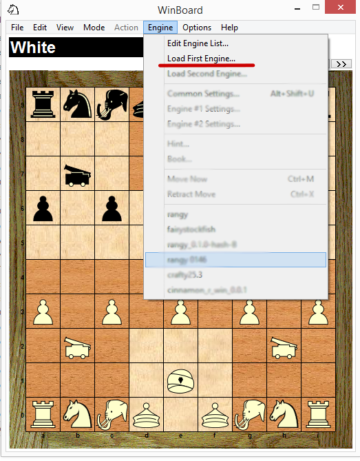
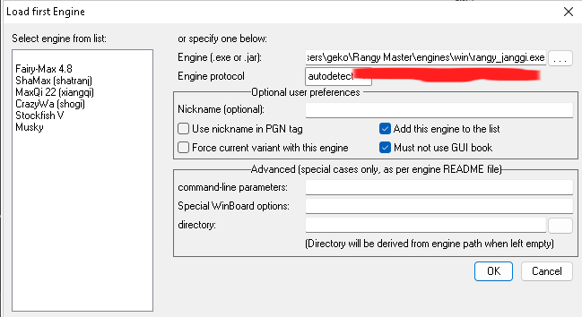
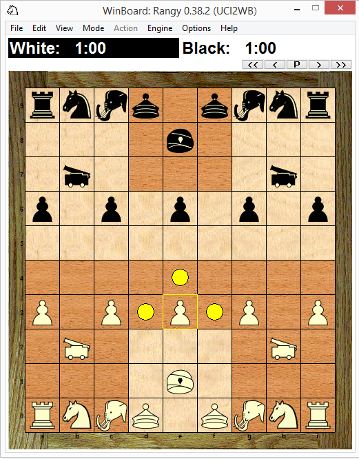

Rangy is the UCI engine behind Janggi Master. It's a command line program so requires a
UCI-compatible graphical user interface (e.g. Winboard)
- Download
winboard
- Run winboard.exe
- Select 'Just view or edit game files'

- Click 'Load First Engine' 
- Load rangy_x.x.x_.exe (x.x.x is the version) 
- Click OK and play
Credits
Winboard is an open source Graphical User Interface for Janggi
by maksimKorzh.